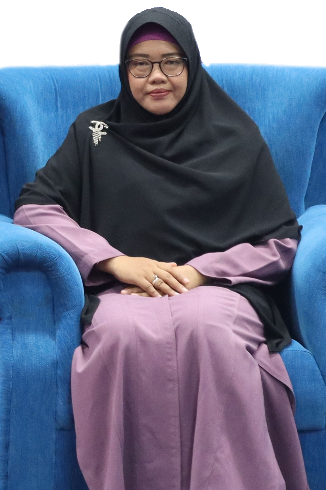

TENTANG WARISMATE
LATAR BELAKANG
Di Indonesia, konflik keluarga akibat pembagian harta warisan sering
terjadi karena kurangnya pemahaman terhadap hukum waris yang jelas dan
benar. Ketidaktahuan akan prinsip-prinsip waris dalam Islam, ditambah
dengan adanya perbedaan pendapat di antara ahli waris, kerap kali
menimbulkan perselisihan yang sulit diselesaikan. Bahkan, banyak kasus
di mana perselisihan ini tidak hanya memengaruhi hubungan keluarga tetapi
juga membawa masalah hukum ke pengadilan.
Kami menyadari bahwa pemahaman tentang hukum waris sering kali menjadi
tantangan tersendiri. Kompleksitas dalam pembagian hak waris yang
melibatkan banyak pihak dengan ketentuan yang detail sering menimbulkan
kebingungan bahkan potensi perselisihan. Dengan melihat permasalahan ini,
kami tergerak untuk menghadirkan sebuah inovasi digital yang mampu
memberikan manfaat nyata bagi umat.
Warismate tidak hanya sekadar alat bantu perhitungan, tetapi juga
menjadi media pembelajaran yang membantu masyarakat untuk memahami
dasar-dasar ilmu waris, mulai dari terminologi, prinsip, hingga studi
kasus nyata.
APA ITU WARISMATE?
Warisan adalah salah satu aspek penting dalam hukum Islam yang telah
diatur secara jelas dalam Al-Qur'an dan sunnah. Namun, kenyataannya,
banyak umat Islam yang merasa kesulitan dalam memahami konsep ini,
apalagi menerapkannya secara akurat. Tidak jarang, salah pemahaman
tentang hukum waris menjadi pemicu konflik keluarga yang berkepanjangan,
bahkan berujung pada perpecahan hubungan kekerabatan.
Melihat tantangan ini, Warismate hadir sebagai solusi modern yang
dirancang untuk mempermudah proses pembelajaran dan perhitungan waris
sesuai syariat, sehingga dapat mengurangi potensi konflik dalam pembagian
harta warisan.
Warismate tidak hanya sekadar alat bantu perhitungan, tetapi juga menjadi
media pembelajaran yang membantu masyarakat untuk memahami dasar-dasar
ilmu waris, mulai dari terminologi, prinsip, hingga studi kasus nyata.
Kami berharap aplikasi ini dapat menjadi solusi efektif untuk mencegah
konflik dan memperkuat harmoni keluarga melalui pembagian waris yang adil
dan sesuai syariat.
TIM PENYUSUN
Warismate adalah karya inovatif dari kelompok PKM-KC Hibah Internal Universitas Darussalam Gontor. Tim kami terdiri dari mahasiswa Teknik Informatika semester 4 yang bersemangat untuk menggabungkan teknologi dan nilai-nilai Islam dalam sebuah aplikasi yang bermanfaat:
-
 Fayshal Karan AthillaKetua Kelompok PKM-KC
Fayshal Karan AthillaKetua Kelompok PKM-KC -
 Mohammad Ridho CahyonoAnggota 1 PKM-KC
Mohammad Ridho CahyonoAnggota 1 PKM-KC -
 Iqbal MaulanaAnggota 2 PKM-KC
Iqbal MaulanaAnggota 2 PKM-KC -
 Andrian MaulanaAnggota 3 PKM-KC
Andrian MaulanaAnggota 3 PKM-KC -
Miftahuddin Fahmi, S.Kom., M.KomDosen Pembimbing PKM-KC
-
Indah Puspitasari, S.P., M.E., C.Med.Pembimbing Kalkulator Mawarits
Dalam pengembangannya, kami mendapat bimbingan langsung dari dosen pembimbing, al-Ustadz Miftahuddin Fahmi, S.Kom., M.Kom., yang mengarahkan kami dari segi teknis hingga strategi pengembangan. Tidak hanya itu, kami juga mendapatkan bimbingan dari Al-Ustadzah Indah Puspitasari, S.P., M.E., C.Med., selaku Wakil Direktur Centre for Mawarith Studies (CMS) UNIDA Gontor,yang memastikan aplikasi kalkulaktor mawarits ini sesuai dengan ketentuan materi dan hukum Islam yang benar.
REFERENSI
Dalam pengembangan aplikasi ini, kami menggunakan referensi dari berbagai sumber terpercaya untuk memastikan akurasi materi yang disajikan. Beberapa referensi utama yang kami gunakan adalah:
- Buku Pelajaran Ilmu Faraidh KMI sebagai dasar teori hukum waris Islam yang ringkas dan sistematis
Dengan menggabungkan ilmu yang kami peroleh dari sumber-sumber ini, kami berkomitmen untuk menyajikan aplikasi yang tidak hanya fungsional, tetapi juga sesuai dengan kaidah hukum Islam yang benar.
PENGGUNAAN SITUS WEB
Aplikasi ini dirancang dengan antarmuka yang sederhana dan ramah pengguna. Melalui Warismate, Anda dapat:
- Belajar Interaktif: Pelajari teori waris Islam dengan modul pembelajaran yang mudah dipahami, lengkap dengan penjelasan visual dan contoh kasus.
- Kalkulator Waris Syariah & Kontemporer: Hitung pembagian waris secara otomatis dengan input data yang sederhana. Sistem kami dirancang untuk menghasilkan hasil yang akurat sesuai dengan kaidah fikih.
- Panduan Praktis: Aplikasi ini juga dilengkapi dengan panduan langkah demi langkah untuk membantu Anda memahami proses pembagian waris sesuai hukum Islam.
Kami percaya bahwa dengan aplikasi ini, proses belajar dan memahami waris menjadi lebih mudah, praktis, dan dapat dilakukan oleh siapa saja, kapan saja.